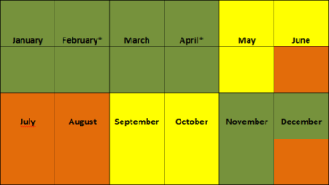

*skoleferieperiode i februar, march eller april tæller som mellemsæson
Reserver via mail: på hverdager fra 8:00 til 22:00 svar indenfor 3 timer og i weekender indenfor en dag, om huset er ledigt
Højsæson (orange) 4650 DKK per uge
Mellemsæson (gul) 3650 DKK per uge
Lavsæson (grøn) 2800 DKK per uge
El og vand o.s.v. betales efter forbrug (omkring 500 DKK per uge i vinteren, 200 DKK om sommeren)
Øvrige priser:
Leje af sengetøj m.m. 150 DKK per uge